- 1. Introduction
- 2. Balanced Parentheses
- 3. Brief Diversion: Regular Grammars
- 4. Back to Balanced Parentheses
- 5. Pushdown Automata
- 6. Top-Down Parsing
- 7. Alternative Views
- 8. Descending, Recursively
- 9. Basic Expression Parsing
- 10. Parsing BNF Grammars
- 11. Lookahead
- 12. Expressions Revisited
- 13. Wrapping Up
Your eyes are bleeding, and trying to reliably extract information from C header files using regular expressions has driven you to the brink of insanity. You can admit that you’ve got a problem, but now what?
[This post was derived from a Jupyter notebook.]
1 Introduction
The last post discussed how regular expressions work, from a theoretical standpoint, and showcased the core of a working regex engine based directly on that theory. It also ended with a discussion of the limits of regular expressions and why no regex engine can parse regular expressions–a capability we’d need to create a working front end that can accept regexen as a first step to doing interesting things with them (like synthesizing hardware or screen printing state machines on tie-dyed T-shirts). This post explores some options for when regular expressions are simply not enough.
There’s a lot of ground to cover in this post, but in brief, we will:
- Reason our way into a new computational model, analyze how it works, and base a parsing strategy on that analysis;
- Create a collection of tools for constructing recursive descent parsers;
- Briefly grapple with several issues that crop up in grammar and parser design;
- Use a parser for a simple expression language to build a working four-function calculator program, with variables, parenthetical grouping, and almost civilized error detection and recovery.
2 Balanced Parentheses
Before implementing a predicate to check whether a string consists of balanced parentheses, let’s consider how to describe such strings. The simplest balanced paren string is just an empty string–with neither left nor right parentheses, or anything else, it’s obviously balanced. The next is a single pair ’()’. From there, we can do some combination of
- inserting a balanced-paren string between the left and right parentheses and
- appending a balanced-paren string to the existing expression.
We know that regular expressions won’t do, since they can’t handle recursive structures or algebraic relationships, so we’ll head straight for a grammar, specifically, a context-free grammar (CFG), like so:
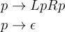
where L and R stand in for left and right parentheses, respectively.
A CFG is made up of a series of rules (also called productions or substitutions), each describing how the single symbol to the left of the arrow (the nonterminal symbol) relates to the symbols on the right (a sequence of nonterminals and terminals). In this particular language, L, R, and ε are the terminal symbols, so named because they are not described by any rule in the grammar. p, meanwhile, is described by a rule, and thus is a nonterminal symbol. (If we had more than one symbol left of an arrow, we’d consider the additional symbols to be restrictions on when the production could be applied–the production, and thus the grammar, would be context-sensitive. We’re not looking at such languages today.)
For brevity, rules for transforming the same nonterminal are usually collapsed, with alternatives separated by pipe characters, as in:
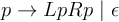
For ease of handling in a text editor, we’ll use a stripped-down version of the Backus-Nauer Form (BNF) for our grammar notation. Converting to BNF and using more descriptive naming than is typical in mathematical presentations of grammars:
parens :
| '(' parens ')' parens
Note that the ε-production became the empty production in BNF, placed at the beginning for clarity. (In a CFG, there is no significance attached to the ordering of productions—they can theoretically be tried or applied in any order.)
3 Brief Diversion: Regular Grammars
If we were to restrict a CFG such that each production could contain at most one nonterminal, and that symbol could appear only at the right end of the production, we would end up with something called a right-regular grammar (likewise, restricting it to appear at the left end would lead to a left-regular grammar). Such regular grammars produce regular languages, the very languages describable by regular expressions and recognizable by finite state machines. For example, to describe a run of any number of digits in a regex, we might write,
/[0-9]*/
We could also write a grammar:
digit : 0 | 1 | 2 | 3 | 4 | 5 | 6 | 8 | 9
digits :
| digit digits
We could also write digits to produce a left-regular grammar:
digits :
| digits digit
While it’s by now clear that regular languages are a subset of context free languages, it should also be clear that regular expressions are a far more compact notation for specifying them. That said, it’s worth keeping this connection mind as a tool for building up more complex regular expressions.
4 Back to Balanced Parentheses
Knowing how to describe balanced paren strings, how can we test whether a given string is one? The very simplest thing we could do is to maintain a counter, initialized at zero, that we increment or decrement on encountering an open or close parenthesis, respectively:
def is_balanced_paren(s): opened = 0 for c in s: if c == '(': opened += 1 elif c == ')': opened -= 1 else: return False # illegal character if opened < 0: return False # closed too many return opened == 0
Which performs as expected:
def test(fn, *battery): width = max(len(case) for case, _ in battery) + 2 fmt = '%%-%ds gives %%-8s --> %%s' % width for (case, expected) in battery: result = fn(case) success = 'pass' if result == expected else 'fail' case_str = "'%s'" % case print(fmt % (case_str, result, success)) PAREN_TESTS = [ ('()()((())())', True), ('()()((())()', False), (')(', False), ('', True), ] test(is_balanced_paren, *PAREN_TESTS)
'()()((())())' gives True --> pass
'()()((())()' gives False --> pass
')(' gives False --> pass
'' gives True --> pass
With our toy example working, let’s motivate something slightly more complex: We’ll allow parentheses (’()’), brackets (’[]’), and braces (’{}’) in the same string—all balanced. The intuition for the grammar is the same, but now it looks like:
parens :
| '(' parens ')' parens
| '[' parens ']' parens
| '{' parens '}' parens
Suddenly a simple counter, or set of counters, won’t cut it—the closing braces, brackets, and parentheses must also appear in the proper order. What’s called for is a stack:
def is_balanced_parens(s): # using a sentinel for end of input lets us avoid explicit length checks end = '$' stack = [end] s2 = list(s) + [end] right = dict(('()', '[]', '{}')) lefts = set(right) for c in s2: if c == stack[-1] == end: return True elif c == stack[-1]: del stack[-1] elif c in right: stack.append(right[c]) else: return False
Adding some mixed enclosures cases and testing again, we see that everything works properly:
MIXED_ENCLOSURE_TESTS = [ ('[({}()[[{}]()])(((())))]', True), ('[({}()[[{}]()])(((())))', False) ] test(is_balanced_parens, *MIXED_ENCLOSURE_TESTS, *PAREN_TESTS)
'[({}()[[{}]()])(((())))]' gives True --> pass
'[({}()[[{}]()])(((())))' gives False --> pass
'()()((())())' gives True --> pass
'()()((())()' gives False --> pass
')(' gives False --> pass
'' gives True --> pass
5 Pushdown Automata
Now that we have an approach that’s more generally applicable, let’s examine how it works:
- As in the case of our first implementation of an IP address
recognizer, there’s a tiny bit of state—specifically, there are three
states in which the checking process can be:
- A working state (from invocation right up to return);
- A failure state (whenever we return
False) - An accepting state (whenever we return
True)
- The next state is determined by:
- The current state;
- The current input symbol; and,
- The symbol atop the stack.
- As we proceed, we can manipulate the stack based on the selected transition.
By bolting a stack onto a state machine, thereby solving the problem of limited memory that constrains normal finite state machines, we’ve invented a more powerful device, called a Push-Down Automaton (PDA), that can recognize any context-free language—like HTML and regular expression syntax. In more formal treatments, PDAs are specified by a tuple,
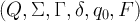
where
- Q is a set of states;
- Σ is the input alphabet (i.e., the set of legal input symbols);
- Γ is the stack alphabet (i.e., the set of symbols that can be on the stack);
- δ: Q × Σε × Γε → ℘(Q × Γε) is the transition function;
- q0 ∈ Q is the initial state; and,
- F ⊆ Q is the set of accepting states.
In our PDA, we know that we have three states (call them “scan”, “accept”, and “reject”) and we know their respective roles. We know the input alphabet (including the ’\(' that we append to the input string) and we know the stack alphabet (the closing markers and '\)’). The only thing left is to specify the transition function. In abbreviated form (omitting transitions to the reject state):
| state | stack | input | stack op | next state |
|---|---|---|---|---|
| scan | any | ’(’ | push ’)’ | scan |
| scan | any | ’{’ | push ’}’ | scan |
| scan | any | ’[’ | push ’] | scan |
| scan | ’)’ | ’)’ | pop | scan |
| scan | ’}’ | ’}’ | pop | scan |
| scan | ’]’ | ’]’ | pop | scan |
| scan | $ | $ | pop | accept |
This transition function is the program that enables our PDA to recognize the language of interest over the input alphabet. The question that immediately arises when we consider more complex languages is: How can we take a grammar describing a language and come up with a PDA that recognizes it?
6 Top-Down Parsing
There are two main approaches to programming a PDA, and therefore parsing context free languages: top-down and bottom up. We’ll concern ourselves with top-down for now.
For simplicity, let’s go back to the original balanced paren grammar:
parens :
| '(' parens ')' parens
We have two productions, and we’ll restrict ourselves to our favorite three states. Instead of only pushing complementary symbols onto the stack, though, let’s try something different:
- We’ll prime the stack with our single nonterminal.
- Whenever there’s a terminal atop the stack, we’ll match it in the input stream, removing it from the stack as we do.
- Whenever there is a nonterminal atop the stack, we’ll replace it with the symbols from the production we expect to use. Because we’re ultimately going for replacement with terminals, and since those are matched only when atop the stack, we have to make sure they appear on the top in the proper order. So, we’ll push them on from right to left (i.e., opposite their order in the production).
Maybe a transition function will make things clearer:
| state | stack | input | stack operations | next state | consume input? |
|---|---|---|---|---|---|
| scan | parens | any | poppush parens, ’)’, parens, ’(’ | scan | no |
| scan | parens | any | pop | scan | no |
| scan | ’(’ | ’(’ | pop | scan | yes |
| scan | ’)’ | ’)’ | pop | scan | yes |
| scan | $ | $ | pop | accept | yes |
Consider the input string ’(())()’. Based on the above, the stack usage and input consumption look like:
| operation | stack | unconsumed | notes |
|---|---|---|---|
| initialize | $ parens | ’(())()’ $ | |
| expand | $ parens ’)’ parens ’(’ | ’(())()’ $ | |
| match | $ parens ’)’ parens | ’())()’ $ | |
| expand | $ parens ’)’ parens ’)’ parens ’(’ | ’())()’ $ | |
| match | $ parens ’)’ parens ’)’ parens | ’))()’ $ | |
| expand | $ parens ’)’ parens ’)’ | ’))()’ $ | ε |
| match | $ parens ’)’ parens | ’)()’ $ | |
| expand | $ parens ’)’ | ’)()’ $ | |
| match | $ parens | ’()’ $ | |
| expand | $ parens ’)’ parens ’(’ | ’()’ $ | |
| match | $ parens ’)’ parens | ’)’ $ | |
| expand | $ parens ’)’ | ’)’ $ | |
| match | $ parens | $ | |
| expand | $ | $ | |
| match | accept |
Whenever a nonterminal, call it x, appears atop the stack, we replace
it with a corresponding series of symbols we expect to match in the
input; any terminal appearing atop the stack is immediately matched
against the input. Once we’re done matching all of the symbols that
replaced x, we’re by definition done matching x itself, and we can
go on matching the next thing (call it y). Another way to think about
this is that a symbol on the stack is actually a directive to match one
of the corresponding productions in the input, and the expansion
operation is the first part of how that happens for nonterminals. It’s
hardly a leap for us to equate the stack expansion of a nonterminal with
calling a procedure to match that expansion from the input—in fact,
that’s the very basis of recursive descent parsing, which is the primary
method of writing parsers for context free languages by hand.
7 Alternative Views
We’re using CFGs to describe strings that are produced by external processes, like human programmers or very chatty sensors. A different view is that one can take a CFG and, beginning with the start symbol, repeatedly apply the various productions to generate different strings in the corresponding context free language. Continuing with the above input and at each step choosing the leftmost nonterminal to expand, the derivation (with ε’s omitted) would look like:
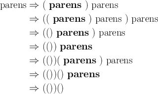
This leftmost derivation corresponds closely with the actions taken by the PDA we just used to recognize the input string as a member of the balanced-paren language.
A different and more relevant (for us) view is that a CFG provides a
means of understanding the structure of utterances in the corresponding
language. More than merely recognizing when a string belongs in, for
example, parens, we want to decompose such a string into its
parts—i.e., we wish to parse the string. In the case of our input,
’(())()’, the parse tree would look like:
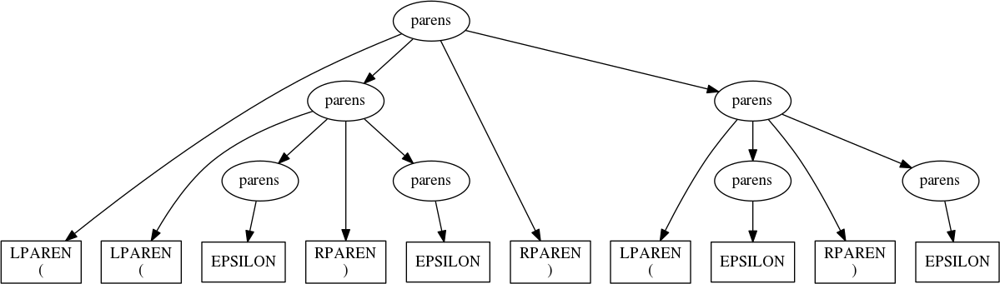
Each leaf node in the tree is an instance of a terminal symbol from the CFG, and each interior node is an instance of a nonterminal. Generating this structure, either explicitly or logically, is the focus of parsing, also called syntactic analysis. Interpreting a parse tree to, for example, generate compiled programs or carry out diabolical doomsday scenarios, is the process of semantic analysis. As we’ll soon see,
- There is a close correspondence between the structure of a parse tree and the ease of certain kinds of semantic analysis; and,
- It’s possible to engineer a CFG for a given language to produce parse trees that are more convenient for the processing that we intend to do.
8 Descending, Recursively
In recursive descent parsing, we represent every symbol by a function
capable of matching it in the input. Using this approach, our
implementation of is_balanced_parens becomes:
# We'll adopt the convention that a parsing function will return, on success, # a pair (parsed, rest), where # * parsed is a representation of what was matched from the input, and # * rest is the remaining input ## terminal parsers def LPAREN(s): 'match open paren' if s and s[0] == '(': return s[0], s[1:] def RPAREN(s): 'match close paren' if s and s[0] == ')': return s[0], s[1:] def EPSILON(s): 'match epsilon' return '', s ## nonterminals def parens(s): ''' parens : LPAREN parens RPAREN parens | EPSILON ''' # Using exception handling for dealing with alternatives keeps our code # from marching to the right. Also, note the arrangement: we're starting # with the production that will actually try to consume input. This matters # because we return the first production that succeeds, and EPSILON never # fails. try: # this chaining on rest accomplishes sequential matches left, rest = LPAREN(s) p_inside, rest = parens(rest) right, rest = RPAREN(rest) p_outside, rest = parens(rest) return (left, p_inside, right, p_outside), rest except TypeError: return EPSILON(s) def is_balanced_parens(s): # Parsing a valid string will consume it entirely. parsed, rest = parens(s) return rest == ''
And the new is_balanced_parens responds as expected:
test(is_balanced_parens, *PAREN_TESTS)
'()()((())())' gives True --> pass
'()()((())()' gives False --> pass
')(' gives False --> pass
'' gives True --> pass
9 Basic Expression Parsing
Let’s try something more ambitious: parsing simple mathematical expressions. The nonterminals will be:
OPERATOR: ’+’, ’-’, ’*’, and’/’;NUMBER; and,- Open and close parentheses (
LPARENandRPAREN, respectively).
The very simplest thing we can try is to simply say something like:
expression : expression OPERATOR expression
| LPAREN expression RPAREN
| NUMBER
Simple, right?
Before translating this to code, let’s take a few minutes to implement
better tools for constructing recursive descent parsers. The
exception-based implementation of parens above is horrible. What we
really want is to write code that looks more like the grammar. Without
going all the way to producing callable objects composable under various
operations:
import re ## utilties for making terminal parsers def match(spec, s): 'match a regular expression spec in s, skipping leading whitespace' s = s.lstrip() x = re.match(spec, s) if x: return s[:x.end()], s[x.end():] def literal(spec, s): 'match a literal string spec in s, skipping leading whitespace' s = s.lstrip() n = len(spec) if s[:n] == spec: return spec, s[n:] ## utilities for making nonterminal parsers def seq(*syms): 'return a parser that matches sequences of symbols' def parse(s): acc = [] rest = s for sym in syms: x = sym(rest) if not x: return False matched, rest = x acc.append(matched) return acc, rest return parse def alt(*syms): 'return a parser that matches alternatives (first match wins)' def parse(s): for sym in syms: x = sym(s) if x: return x return False return parse def parse(start, s): 'match only if all input is consumed' x = start(s) if x: matched, rest = x if rest.strip() == '': return matched
Also, let’s create a few utilities to simplify handling the parse trees that we’ll create:
# Time spent on a nice printable representation of complex data structures # repays itself at debugging time. def indent(s, tab=' '): return tab + s.replace('\n', '\n' + tab) class symbol: def __init__(self, type_, value, terminal=False): self.type = type_ self.value = value self.terminal = terminal if not self.terminal and type(self.value) != list: self.value = [self.value] def __repr__(self): if self.terminal: return f"{self.type}: '{self.value}'" else: header = self.type + ':' body = '\n'.join(map(repr, self.value)) if body.count('\n') == 0: return header + ' ' + body else: return header + '\n' + indent(body) def __iter__(self): if not self.terminal: return iter(self.value) else: return iter(()) class parse_result(tuple): def __repr__(self): return ''' parse ===== %s unconsumed ========== %s '''.replace(''' ''', '\n') % self class parser: def __init__(self, f, terminal=None): self.f = f if terminal == None: # as convenience, infer terminality by f's name being all caps self.terminal = f.__name__ == f.__name__.upper() else: self.terminal = terminal def __call__(self, s): x = self.f(s) if x: matched, rest = x sym = symbol(self.f.__name__, matched, self.terminal) return parse_result((sym, rest))
Applying these to the balanced paren language, we get:
## Terminals @parser def LPAREN(s): 'match open paren' if s and s[0] == '(': return s[0], s[1:] @parser def RPAREN(s): 'match close paren' if s and s[0] == ')': return s[0], s[1:] @parser def EPSILON(s): 'match epsilon' return '', s ## Nonterminals @parser def parens(s): ''' parens : LPAREN parens RPAREN parens | EPSILON ''' return alt(seq(LPAREN, parens, RPAREN, parens), EPSILON)(s)
Turning parens on the string ’(())()’ results in the parse tree we saw
before:
parens('(())()')
Now we’re ready to translate our simple expression grammar into code:
@parser def NUMBER(s): return match('\d+', s) @parser def OPERATOR(s): return match('[+*/-]', s) @parser def expression(s): ''' expression : expression OPERATOR expression | LPAREN expression RPAREN | NUMBER ''' return alt(seq(expression, OPERATOR, expression), seq(LPAREN, expression, RPAREN), NUMBER)(s)
Testing it on a simple addition reveals a problem, though:
expression('4 + 5 + 6')
---------------------------------------------------------------------------
RecursionError Traceback (most recent call last)
<ipython-input-18-a70ee2db7313> in <module>()
----> 1 expression('4 + 5 + 6')
[...]
RecursionError: maximum recursion depth exceeded
What’s happened is that the very first production tested,
expression : expression OPERATOR expression
led to a call to expression without consuming any input; that led to
another call, and so, until we destroyed our call stack. This left
recursive production in the grammar led to infinite recursion in the
parser, and there’s no mere trick of implementation that will get rid of
it. We have to revisit the grammar itself.
Suppose we came up with the concept of a subexpression, or subex, which would
represent anything that could be combined with another subex using an
OPERATOR. We could then say that an expression is nothing more than a series
of OPERATOR-separated subexpressions. If a subex is just a NUMBER or an
expression enclosed in parentheses,
expression : subex OPERATOR expression
| subex
subex : NUMBER
| LPAREN expression RPAREN
This kind of transformation is sufficient to break the left recursion.
While it’s not strictly necessary, further factoring can often make life
easier later. For example, there are two type of subex:
enclosed : LPAREN expression LPAREN subex : NUMBER | enclosed
Now to revisit the implementation:
@parser def expression(s): ''' expression : subex OPERATOR expression | subex ''' return alt(seq(subex, OPERATOR, expression), subex)(s) @parser def subex(s): 'subex : NUMBER | enclosed' return alt(NUMBER, enclosed)(s) @parser def enclosed(s): 'enclosed : LPAREN expression RPAREN' return seq(LPAREN, expression, RPAREN)(s)
Calling expression('4 + 5*6 - 7') generates the following parse tree:
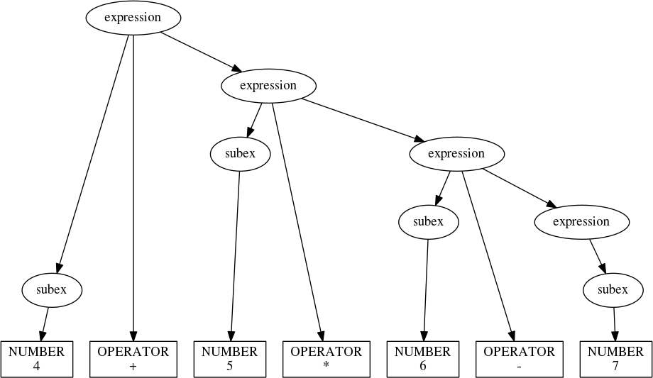
Okay, we’ve fixed the left recursion problem only to highlight a new one: We know that
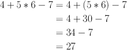
In general, parse trees are interpreted from the bottom up, with the tightest constructs evaluated first (i.e., by postorder traversal). Applying this to the parse tree we just generated, we see that it really describes
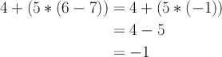
which is wrong.
The issue here is that our grammar says nothing about operator precedence. We
can fix this is by elaborating the notion of an expression further: We’ll now
treat it as a series of terms combined under addition and
subtraction. Each term will then consist of one or more factors,
multiplied or divided:
expression : term ADDOP expression
| term
term : factor MULOP term
| factor
factor : NUMBER | enclosed
where ADDOP represents the additive operators (+ and -) and MULOP
represents the multiplicative operators (* and /).
Adapting our parser:
@parser def ADDOP(s): return match('[+-]', s) @parser def MULOP(s): return match('[*/]', s) @parser def expression(s): ''' expression : term ADDOP expression | term ''' return alt(seq(term, ADDOP, expression), term)(s) @parser def term(s): ''' term : factor MULOP term | factor ''' return alt(seq(factor, MULOP, term), factor)(s) @parser def factor(s): 'factor : NUMBER | enclosed' return alt(NUMBER, enclosed)(s)
And now expression correctly parses the test string:
expression('4 + 5*6 - 7')
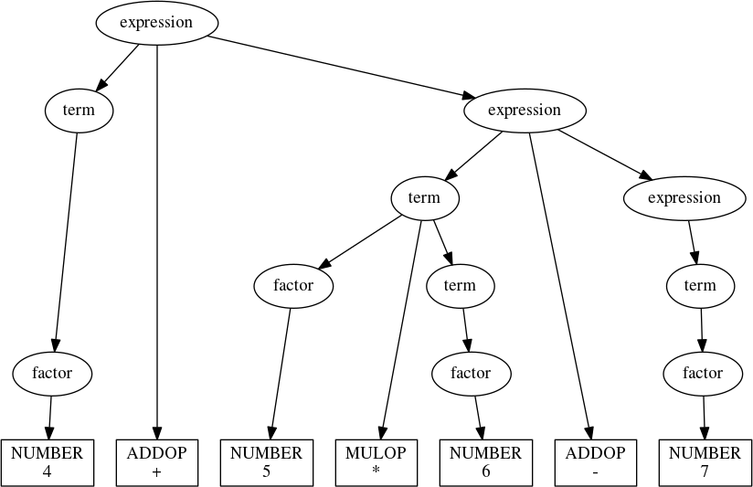
So far, so good, but another problem lurks: Associativity. The parse
tree that expression generates for '1 - 2 - 3' is:
expression('1-2-3')
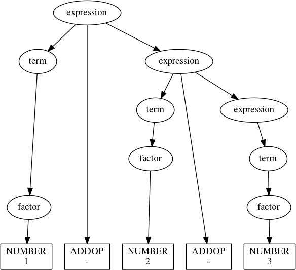
This parse tree says that 1-2-3 = 1-(2-3) = 2, which we know to be incorrect. The problem is that subtraction is left associative (as is division), while our grammar has all operators as right associative. We can fix this by changing the grammar yet again, arriving at something closer to the second expression grammar that we had (when we cured the left recursion).
Think of an expression as a starting term followed by a series of increments:
expression : term increments
increments :
| increment increments
Each increment consists of an operation (either addition or subtraction) and a term:
increment : ADDOP term
Likewise, each term is composed of a starting factor followed by a series of scalings, each composed of an operation (multiplication or division) and a factor:
term : factor scalings
scalings :
| scaling scalings
scaling : MULOP factor
With this,
@parser def expression(s): 'expression : term increments' return seq(term, increments)(s) @parser def increments(s): ''' increments : | increment increments ''' return alt(seq(increment, increments), EPSILON)(s) @parser def increment(s): 'increment : ADDOP term' return seq(ADDOP, term)(s) @parser def term(s): 'term : factor scalings' return seq(factor, scalings)(s) @parser def scalings(s): ''' scalings : | scaling scalings ''' return alt(seq(scaling, scalings), EPSILON)(s) @parser def scaling(s): 'scaling : MULOP factor' return seq(MULOP, factor)(s) @parser def factor(s): 'factor : NUMBER | enclosed' return alt(NUMBER, enclosed)(s) @parser def enclosed(s): 'enclosed : LPAREN expression RPAREN' return seq(LPAREN, expression, RPAREN)(s)
We can now build a parse tree for 1-2-3 that accurately describes what we need to do to correctly evaluate it:
expression('1 - 2 - 3')
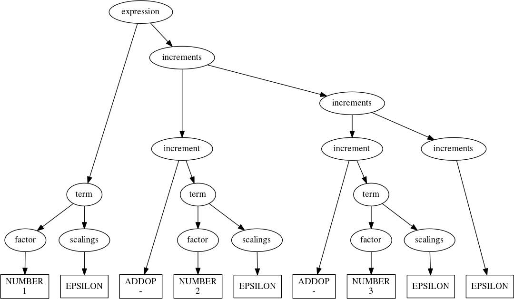
We could even process this tree to evaluate the expression. In fact, let’s do that.
There are a couple of perfectly good options for evaluating expressions based on our parser:
- We could process the tree after it’s finished, explicitly performing a post-order traversal and propagating intermediate results upward.
- We could outfit the parsers with evaluation logic triggered immediately on matching the associated symbols.
The latter option is referred to as syntax-directed translation, since
the parser drives the entire translation process (think of evaluation as
the process of translating an expression to a final value). Since
syntax-directed translation is more common in compiler design, and
because it’s an elegant approach, we’ll go that way. Let’s start by
adding to parser:
class parser(parser): def on(self, handler): 'set a symbol handler' self.handler = handler def __call__(self, s): x = self.f(s) if x: matched, rest = x sym = symbol(self.f.__name__, matched, self.terminal) # call the symbol handler if present if hasattr(self, 'handler'): self.handler(sym) return parse_result((sym, rest))
Now we can write handlers for each symbol we care to process. Tagging
each symbol with a result attribute accumulated up the parse tree:
from functools import reduce from operator import mul def product(xs): return reduce(mul, xs, 1) @NUMBER.on def h_NUMBER(sym): sym.result = int(sym.value) @enclosed.on def h_enclosed(sym): sym.result = sym.value[1].result @factor.on def h_factor(sym): sym.result = sym.value[0].result @scaling.on def h_scaling(sym): op, mag_ = sym.value mag = mag_.result sym.result = mag if op.value == '*' else 1/mag @scalings.on def h_scalings(sym): if sym.value[0].type == 'EPSILON': sym.result = 1 else: sym.result = sym.value[0].result * sym.value[1].result @increment.on def h_increment(sym): op, mag_ = sym.value mag = mag_.result sym.result = mag if op.value == '+' else -mag @increments.on def h_increments(sym): if sym.value[0].type == 'EPSILON': sym.result = 0 else: sym.result = sym.value[0].result + sym.value[1].result @term.on def h_term(sym): a, b = sym.value sym.result = a.result * b.result @expression.on def h_expression(sym): a, b = sym.value sym.result = a.result + b.result
A few test cases, including the troubling expressions from before, give us confidence that we’re properly evaluating positive integer arithmetic:
def calc(s): return expression(s)[0].result test(calc, ('4 + 5*6 - 7', 4 + 5*6 - 7), ('1 - 2 - 3', 1 - 2 - 3), ('(30 + 40)/(3 + 4)', (30 + 40)/(3 + 4)) )
'4 + 5*6 - 7' gives 27 --> pass '1 - 2 - 3' gives -4 --> pass '(30 + 40)/(3 + 4)' gives 10.0 --> pass
10 Parsing BNF Grammars
Now that we have a straightforward way to produce recursive descent parsers from BNF grammars by inspection, let’s try a useful party trick: Let’s parse our BNF grammars.
As we’ve seen, a grammar is a series of rules (we’ll insist on having at least one):
rules : rule rules
| rule
Each rule consists of a name and a series of alternative productions, with appropriate delimiters:
rule : IDENTIFIER COLON productions
productions : production PIPE productions
| production
And, finally, a production is nothing more than a series of symbols to substitute for the nonterminal being defined:
production :
| IDENTIFIER production
Given these definitions, it should be trivial to write a parser by inspection with the tools we have, yes? Let’s try.
## terminals @parser def IDENTIFIER(s): return match('[a-zA-Z_][\w_]*', s) @parser def COLON(s): return literal(':', s) @parser def PIPE(s): return literal('|', s) ## nonterminals @parser def rules(s): ''' rules : | rule rules ''' return alt(seq(rule, rules), EPSILON)(s) @parser def rule(s): 'rule : IDENTIFIER COLON productions' return seq(IDENTIFIER, COLON, productions)(s) @parser def productions(s): ''' productions : production PIPE productions | production ''' return alt(seq(production, PIPE, productions), production)(s) @parser def production(s): ''' production : | IDENTIFIER production ''' return alt(seq(IDENTIFIER, production), EPSILON)(s)
When we run this on a simple grammar, though, we encounter a problem:
rules(''' a : b c d d : e f ''')
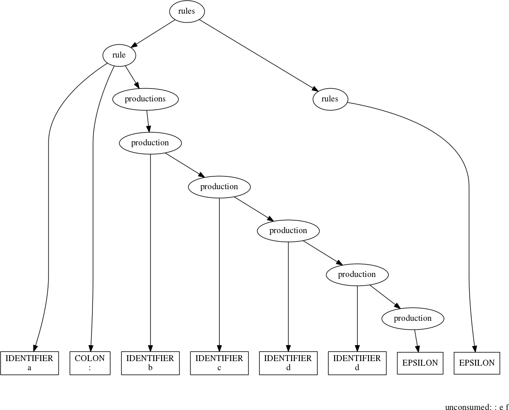
We should have gotten a parse tree over the entire grammar; instead, the
parser stopped early. The unconsumed input begins with a colon—it seems
that somewhere in the parsing process we’re grabbing the IDENTIFIER
that begins a rule definition (in this case ’d’) and appending it to the
previous production. In fact, this very statement suggests a hypothesis
we can test: That production is too greedy:
production(''' d d: e f ''')
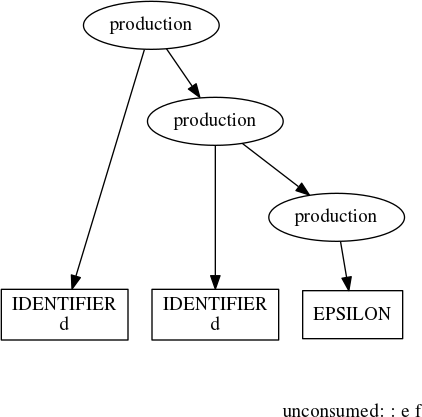
The problem is that there are two roles that IDENTIFIERs can
play—to start rule definitions and to reference rules defined elsewhere—and
our BNF grammar for BNF grammars allows the interpretation of an IDENTIFIER to
shift from one position to the next without any intervening marker, like an
explicit delimiter indicating the end of a rule. We have some options for fixing
this:
- We can add such a delimiter, e.g., a semicolon.
- We can separate out the terminal parsers and run them over the input
stream before the nonterminal parsers, thereby transforming the input
stream into a stream of tokens (this is called lexical analysis, or
lexing). That done, we can add to the grammar a new terminal, say,
RULE_NAME, to absorb the colon; this terminal would only be used for introducing a rule definition. - We can elaborate the
productionparser to check whether a colon follows anIDENTIFIERthat it’s about to consume and, if so, not consume it. This strategy is called lookahead. - Finally, we can elaborate the entire parsing process to incorporate a mechanism for generating all possible parses that consume any amount of the input stream. This strategy is called backtracking.
Adding a rule-end delimiter is an easy fix, and it’s a good one—it transforms the grammar into something that can be parsed very efficiently with the tools we already have. However, the task before us is to parse the BNF notation that we’re using. The approach of using a separate lexer and a grammar to take advantage of it would enable us to meet our objective, but it introduces more complexity than is actually required to do this job.
Having rejected the first two options, let’s consider the next.
11 Lookahead
The basic problem, as discussed, is that production is grabbing
IDENTIFIERs without considering whether they might be introducing a
new rule, something that could be determined by looking ahead one more token to
see if a colon is there. It is very easy to modify the existing code to use this
approach. First, let’s define a couple of functions to perform arbitrary
lookahead without actually consuming input:
def follow(sym): def ret(s): if sym(s): return EPSILON(s) return ret def nofollow(sym): def ret(s): if not sym(s): return EPSILON(s) return ret
Then, we just have to change production to check that a colon doesn’t
immediately follow:
@parser def production(s): ''' production : | IDENTIFIER production ''' return alt(seq(IDENTIFIER, production, nofollow(COLON)), EPSILON)(s)
Keep in mind that adding the lookahead parser to the first production
introduces an additional EPSILON in the corresponding parse. Parsing
the test grammar with rules now produces the following parse tree:
rules(''' a : b c d d : e f ''')
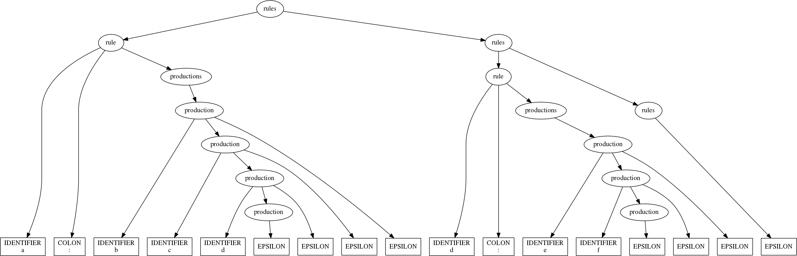
And just like that, we’ve fixed our immediate problem of sorting out the proper role of an IDENTIFIER when we spot one.
For the curious, the parse tree for our expression grammar looks like:
rules(''' expression : term increments increments : | increment increments increment : ADDOP term term : factor scalings scalings : | scaling scalings scaling : MULOP factor ''')
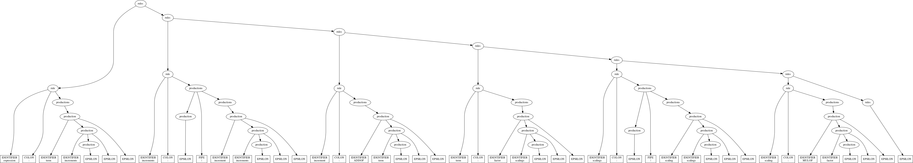
12 Expressions Revisited
The expression evaluator is nice, but there’s no substitute for the power of a full programming language. We won’t go that far right now, but let’s consider what it would take to:
- Allow assignment and references of variables; and,
- Evaluate sequences of statements.
First, let’s come up with a syntax for assigning the result of an expression to a variable:
assignment: IDENTIFIER EQUALS expression
To allow using previously defined variables in expressions, let’s
introduce the concept of a reference and find a logical place in the
grammar to add it:
reference: IDENTIFIER factor: NUMBER | enclosed | reference
Without the idea of multiple =statement=s, executed in sequence, the presence of variables in our language is a bit nonsensical, so let’s fix that:
statements: statement statements
| statement
statement: assignment | expression
That’s it. Together with the rest of our expression grammar defined as before, we’re ready to think about implementing the parser. Defining the following parsing functions:
## new terminals @parser def EQUALS(s): return literal('=', s) ## new nonterminals @parser def statements(s): ''' statements : statement statements | statement ''' return alt(seq(statement, statements), statement)(s) @parser def statement(s): 'statement : assignment | expression' return alt(assignment, expression)(s) @parser def assignment(s): 'assignment : IDENTIFIER EQUALS expression' return seq(IDENTIFIER, EQUALS, expression)(s) @parser def reference(s): 'reference : IDENTIFIER' return IDENTIFIER(s)
And modifying one more:
## modified nonterminals @parser def factor(s): 'NUMBER | enclosed | reference' return alt(NUMBER, enclosed, reference)(s)
We’re ready for a quick test:
statements(''' x = 3 4+5 - x ''')
With our newfound ability to comprehend a simple, Turing-incomplete
language, let’s write a simple interpreter for it. As before, we’ll need
handlers for the parsing functions. What’s different this time is that
we need a place to store defined variables, and it has to be accessible
by the handlers for both reference and assignment. We also need to
decide the proper course of action for referencing a variable before
it’s been assigned a value.
If we decide that referencing unassigned variables should generate an
error, the handlers for assignment and reference might look like:
variables = {} @assignment.on def h_assignment(sym): name, _, val = sym.value variables[name.value] = val.result sym.result = val.result @reference.on def h_reference(sym): name = sym.value[0].value if name not in variables: raise NameError(name) else: sym.result = variables[name]
Now to handle statements. Taking the value of the last statement in a sequence as being the value of the entire sequence (a pretty conventional approach),
@statement.on def h_statement(sym): sym.result = sym.value[0].result @statements.on def h_statements(sym): if len(sym.value) == 1: sym.result = sym.value[0].result else: sym.result = sym.value[1].result
The handlers for the remaining symbols can be just as they were.
For convenience, let’s use our evaluator as the basis for a little interpreter. We don’t have to limit statements to one line each, but it’s simpler if we do. Also, we need to check that each line is entirely consumed—if it isn’t, there’s a syntax error for us to report. With these in mind:
variables = {} while True: line = input('stmt> ').strip() if not line: break try: p = val, rest = statement(line) print(val.result) if rest.strip(): pos = len(line) - len(rest) print('syntax error at pos. %s' % pos) print(p) except Exception as e: print(e.__class__, e.args)
stmt> 4 + 5*6 - 7
27
stmt> 1 - 2 - 3
-4
stmt> x - 4
<class 'NameError'> ('x',)
stmt> x = 4
4
stmt> (30 + x*10) / 7
10.0
stmt> 1 - 2 -
-1
syntax error at pos. 5
parse
=====
statement:
expression:
term:
factor: NUMBER: '1'
scalings: EPSILON: ''
increments:
increment:
ADDOP: '-'
term:
factor: NUMBER: '2'
scalings: EPSILON: ''
increments: EPSILON: ''
unconsumed
==========
-
stmt> x/(x-x)
<class 'ZeroDivisionError'> ('division by zero',)
stmt> x = 3*x
12
stmt> x
12
stmt>
13 Wrapping Up
Our little interpreter leaves a great deal to be desired—even though it
performs real arithmetic, it only accepts positive integers in its
input; it only implements four basic operations; it has no looping or
decision constructs; it lacks useful functions like sin, cos, and
log; etc. Even so, because of the path we took in creating it, we can
imagine how we might approach modifying the language to include at least
some of the features we want, as well as how we might go about bringing
those features into being.
When we first started, we couldn’t even properly handle nested parentheses, something required for a functioning regex engine. Now we can engineer context free grammars to produce parse trees that have desirable properties; use syntax-directed translation to perform computations using those trees; and implement simple interpreters with passable error detection and recovery. Along the way, we invented a computational model, the pushdown automaton (PDA); figured out a reasonable method for programming it; and used our understanding of its operation to devise a practical approach for writing parsers for deterministic context free languages by hand, with an array of little utilities to help us make short work of such a task.
There’s a bit more in the land of recursive descent parsing to cover, like backtracking, EBNF, and parser generators, but we’re at a natural stopping point. With that, let’s stop for now.